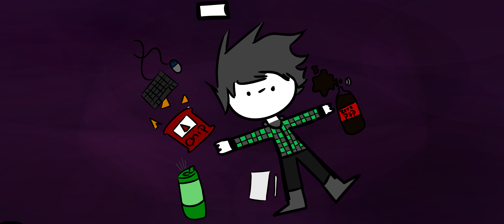

Welcome to My Gallery
I am an artist with a deep passion for art and technology. Since as long as I can remember, I have been creating artwork that I believe is worthy of showcasing. I often use a software called MediBang Paint on my iPad or PC, along with a drawing tablet (similar to Mrs. Schultz's model) or a Cintiq. My designs come to life within Adobe Creative Suite or GIMP, where I blend the power of Photoshop, InDesign, and Illustrator to create captivating designs.
Artwork= drawings,sketches,doodles.
Designs= professional finished artwork, Ready for print, used more than one software to create.
Top Favorite Designs

Date: 10/16/20
OC Ikagai, MT Fuju
Digital artwork

V2

V3

Date: 7/31/21
OC Ikagai B&W Design
Digital Design, Screen Printed

Date: 3/1/21
Hippy Poster
Digital Design, Adobe, Screen Printed, Inkjet Poster

Date: 4/8/21
Inspiration
Digital Design, Adobe

Date: 8/12/23
Inspiration Drip
Digital artwork, Future Design

Date: 8/12/23
Rose
Digital Design, Gimp
Designs made for Printmaking

Date: 1/20/21
Custom Old Video Game Box
Digital Design, Adobe, Print Ready, InkJet, Finished Printed Product, Lazer Engraved

Date: 2/16/21
(unofficial) New Froot Loops Cereal Box Design
Digital Design, Adobe, Print Ready, InkJet, Finished Printed Product, Lazer Engraved
Logos

Date: 2/16/21
(unofficial) New Froot Loops Logo Design
Digital Design, Adobe

Date: 2/3/21
©Logo for IshDrawz
Digital Design, Adobe, Print Ready, Offset Printed

Date: 2/11/21
Custom foodtruck logo "The Smokey Burger Logo"
Digital Design, Adobe

Date: 7/31/23
©Totally Zen Logo
Digital Design, Gimp